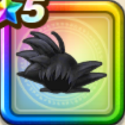

孫悟空ヘアー
攻略班 9.5点 / けもの系への耐性+5%物質系への耐性+5%斬撃・体技耐性+2%MP50%以下のとき斬撃・体技耐性+2%けもの系への耐性+5%物質系への耐性+5%ピッコロ大魔王へのダメージ+10%スキルの体技ダメージ+10%MP50%以下のときスキルの体技ダメージ+3%
くわしい特徴
【レベル別習得スキル】 Lv1けもの系への耐性+5% Lv5ピッコロ大魔王へのダメージ+10% Lv8物質系への耐性+5% Lv10スキルの体技ダメージ+10% Lv12MP50%以下のときスキルの体技ダメージ+3% Lv15斬撃・体技耐性+2% Lv18MP50%以下のとき斬撃・体技耐性+2% Lv20けもの系への耐性+5% Lv23守備力+5% Lv25物質系への耐性+5% 【限界突破スキル】 1凸攻撃力+12 2凸すばやさ+12 3凸守備力+12 4凸さいだいHP+12